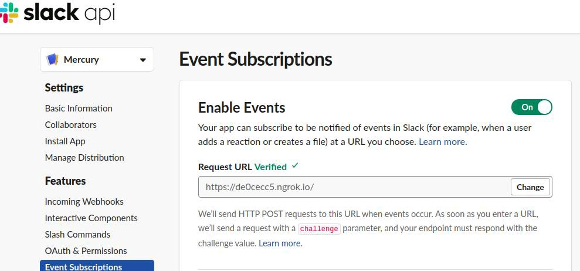
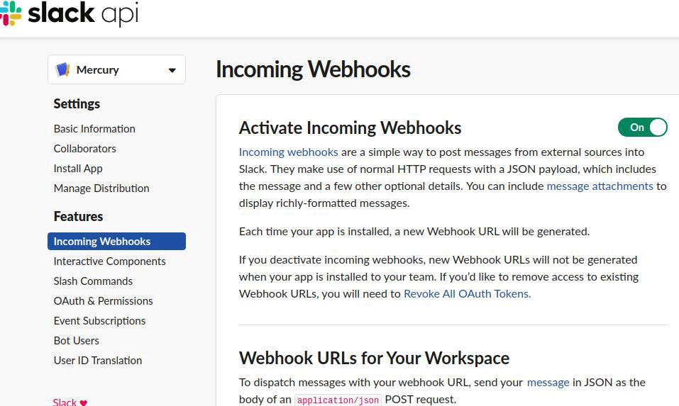

Usually bots perform two operation one to receive the user messages and the other is to provide response to the obtained messages. Dynamically changing response needs backend works to done.
For receiving messages go to Event Subscription page and enable it and provide your ngrok redirected link.

First verify the payload by getting it in POST method and then returning the same payload.
The same code can be used to get the message payload which gives the information about the message. To check it just print data for reference.
Use the Incoming Webhook page and enable it. It a simple way to post messages from external sources into Slack.

Use the below code snippet for responding to the incoming message using python webhook.